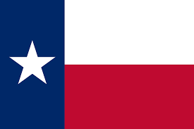

About Me
My name is Rubia and I go by Ruby. I was born in South Africa and live with my family in Madagascar. I am currently working as an administrative legal assistant at a law firm. My children are my world, and I love spending time with them. I love to travel, and I love to learn new things.
Toloria, Madagascar

Madagascar is the 4th largest island in the world and is located in the Indian Ocean. It is home to 5% of the world's plant and animal species, of which more than 80% are endemic to Madagascar. The island is best known for its lemurs, baobab trees, and vanilla.
Official Flag of Madagascar